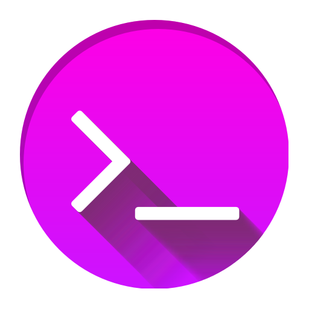

cheesits456

Programmer
Langley, BC Canada
July 27th, 2000
Grad Countdown | June 13, 2018 |

Created a countdown to the date and time of the grad ceremony, and programmed it so that after the grad ceremony, it counts the amount of time since graduation. There's also a public shoutbox so you can leave a message. I plan to host this page forever, so there'll always be a counter from the time of our graduation, as well as the shoutbox. Visit the page here.
Website Completed | May 18, 2018 |
I finally finished this website! I've been putting it off for like, over 7 months now. Feels good to finally have it up and running.
HaileyBot | May 17, 2018 |
HaileyBot started as a personal project back in October 2017 - something I did to learn more about JavaScript and Node.js. It was a private bot that I had on my 3 discord servers I owned. I wanted a way to unify the general chat of each server so I wouldn't have to constantly switch back and forth, and that's how the global chat feature of HaileyBot was born. It started out incredibly rough, but as I learned more, I refined it. Then one day in January 2018, someone joined my server, saw the global chat feature, and asked to have it on their server. I spent the next week or two rewriting it to use a configuration file and loop through a dynamic array of channel IDs rather than using hard-coded values. This way, I'd be able to add new servers to the global chat with ease. Time passed, and HaileyBot began growing rapidly. I updated it pretty much daily, improving the code structure more and more as I learned better programming techniques. From there, it continued growing, and I continued adding more features, until it became what it is today. If you'd like to see it for yourself, you can visit the official website at https://www.haileybot.com/